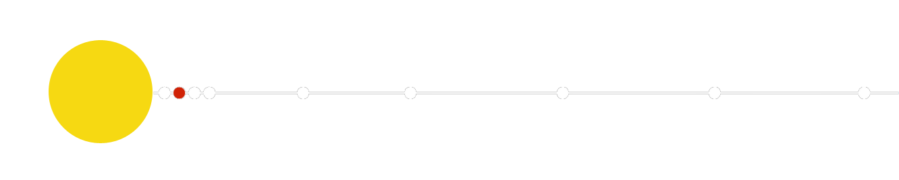

Devi attribuire la paternità dell'opera nei modi indicati dall'autore o
da chi ti ha dato l'opera in licenza e in modo tale da non suggerire che essi avvalino te o il modo in cui tu usi l'opera
| HOMEPAGE | SISTEMA SOLARE | CORPI CELESTI | ||
| paramentri orbitali | |
| semiasse maggiore |
108 208 926 km 0,72333199 UA |
| periodo orbitale |
224,70059 giorni (0,6151970 anni) |
| perdiodo sinodico |
583,92 giorni (1,598687 anni) |
| Velocità orbitale |
34,784 km/s (min) 35,020 km/s (media) 35,259 km/s (max) |
| satelliti | NO |
| anelli | NO |
| dati fisici | |
| diametro equatoriale | 12 103,7 km | superficie | 4,6 x 1014 m2 |
| velocità di rotazione | 1,81 m/s |
| temperatura |
228 K (−45 °C) (min) 737 K (464 °C) (media) 773 K (500 °C) (max) |
pianeta venere
Venere è, dopo Mercurio, il pianeta più vicino al Sole e il sesto, per dimensioni, del Sistema solare, con un diametro appena più piccolo (circa il 95%) di quello della Terra. Insieme a Marte e Mercurio, fa parte di quei pianeti rocciosi denominati terrestri. Venere ha una densità di poco inferiore a quella della Terra, una composizione interna e una conformazione superficiale simili a quelle del nostro pianeta, del quale è dunque considerato un pianeta gemello. Venere è però secco, molto caldo, con un'atmosfera estremamente densa. Non ha satelliti, né un sistema di anelli.
Venere è, con Marte, uno dei due pianeti "vicini" alla Terra; orbita intorno al Sole ad una distanza media di circa 108 milioni di chilometri (la Terra dista dal Sole circa 150 milioni di chilometri) con una traiettoria quasi circolare (è quella con la minore eccentricità), il cui piano orbitale è inclinato di 3,4° rispetto all'eclittica. Venere è inoltre il pianeta che più si avvicina alla Terra, arrivando ad una distanza minima dal nostro pianeta di circa 38 milioni di chilometri.
La velocità orbitale è piuttosto elevata e la distanza dal Sole relativamente ridotta, pertanto il pianeta compie una rivoluzione completa intorno al Sole in un tempo abbastanza breve (circa 225 giorni). Al contrario, il moto di rotazione di Venere attorno al proprio asse è il più lento tra tutti i pianeti del Sistema solare (una rotazione completa richiede circa 244 giorni) ed il periodo di rotazione risulta maggiore del periodo di rivoluzione. La durata del giorno, intesa come insieme del dì e della notte (pari a circa 117 giorni terrestri), è comunque inferiore alla durata dell'anno, in quanto il moto di rotazione di Venere è retrogradoretrogrado
Avviene cioè in senso inverso rispetto a quello degli altri pianetiA causa della minore massa, la sua la forza di gravità risulta inferiore del 10% circa rispetto a quella terrestre. Per fare un esempio, un oggetto che sulla Terra pesasse 100 chili, su Venere ne peserebbe 88.
L'atmosfera è la più densa fra quelle degli altri pianeti del Sistema solare, ed è costituita essenzialmente da anidride carbonica. La pressione atmosferica è pari a circa 90 volte quella esistente sulla Terra ed il pianeta è ricoperto da una spessa coltre di nubi di acido solforico. L'enorme quantità di anidride carbonica genera inoltre un pronunciato effetto serra che impedisce lo smaltimento del calore, determinando sul pianeta la più alta temperatura superficiale del Sistema solare (circa 480 °C). Non solo la temperatura è addirittura superiore a quella che si raggiunge su Mercurio, ma l'escursione termica tra il giorno e la notte è estremamente ridotta.
A causa della velocità di rotazione estremamente ridotta, Venere non possiede un campo magnetico.
Curiosità
Venere è, dopo il Sole e la Luna, il corpo celeste più luminoso visto dalla Terra e l'unico, a parte i primi due, che può essere avvistato anche in pieno giorno, sia pure in condizioni particolari (cielo particolarmente terso e posizione di elongazione massima dal Sole).
Il particolare rapporto tra il periodo di rotazione e quello di rivoluzione di Venere è tale che quando il pianeta raggiunge la minima distanza dalla Terra, esso rivolge al nostro pianeta sempre la stessa faccia. Non si sa se tale fenomeno sia dovuto ad un effetto di risonanza, o se si tratti di una singolare coincidenza.